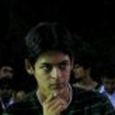
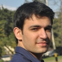
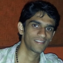
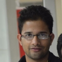
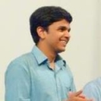

All the Vice President's men
2007 2008  2009  2010  2011  2012 | 2007 | 2008 | 2009 | 2010 | 2011 | 2012 | |
|---|---|---|---|---|---|---|
Click to explore these trends
Library Trend | Foreign Application Cell | Formal training help for placements | Department representatives | Funding for student projects | Alternate careers | Institute support for Internships | Mess monitoring | Grievance reporting | Online initiatives | Information dispersal | Student participation in administration
The infographic incorporates various details. Things to look for are:
- In each year, the categories across which proposals of a candidate lie can be seen.
- A one-line summary of the proposal is visible on hovering over it.
- How successful was a proposal? This is colour-coded: green is a thumbs-up; orange signifies partial success; red is a nada. These colours don't make sense for candidates who didn't win. Such proposals are coded blue. Details on the judgement are elsewhere in this article.
- On hovering above a proposal, similar ones across time are highlighted.
How was similarity decided?
The similarity between certain classes are visible right away on a first inspection, e.g. the foreign application cell, which has starred in the list of proposals numerous times, from 2007-2012. Finding other connections is more subtle, because proposals can be not just repeated but rearranged. Formal training for placements in the form of mock sessions and passing on of funda is one such issue.
There are areas where the connection between proposals is not a one-hundred-percent. For instance, we clubbed Celestine's proposal on electronic noticeboards, Prateek's weekly-email and Akshat's plan of increasing awareness amongst PGs and facchas under information dispersal. What is interesting is that these ideas, in our analysis, are undoubtedly related.
Now some amount of similarity is expected. Say a candidate didn't win but had good ideas which weren't implemented by the winning one either, and then these are legitly taken up in the future. Or say that continual development on important issues is warranted. But we are of the opinion that some high-interest topics get inevitably repeated, such as placements, because candidates don't want to be the guy who didn't make a proposal out of them. We also think that proposals on common themes act like filler material.
Now how exactly were the proposals judged?
A couple of disclaimers and explanations are in order, and we encourage you to read on before drawing weapons in defense of your favourite VP. We've made a decision based on the Vice Presidential review TSA performs at the end of each year. The orange colour category is, admittedly, the grayest area. In some cases it signifies that effort was put in, but it did not lead to a fulfilment of the proposal, e.g. Prateek's idea of an online grievance facility was implemented but is not active. It must also be remembered that proposals are dynamic. Upon assuming office, the office-bearers might realize that their proposal may be implemented in a modified form or tied up with other undertakings, e.g. Arnav's proposal to create a career options cell for conducting seminars was met by roping Communique into TSG. The categorization should also not be taken as a literal indicator of the work put in by the VP in question. In some cases, it is after a number of sincere attempts that the infeasibility of a project becomes
apparent. In others, the VP has simply not done enough.
Another valid point that can be raised is that a project started by a particular candidate is carried over in the next year by the subsequent elected body. In addition, VPs often do considerable work beyond their proposals. The categorization here does not reflect that. This is because we are specifically drawing attention to proposals as they are announced at the time of elections. For details on the ultimate fate of proposals, we point you to the full-scale reviews available on our site. In providing an initial flavour however, we believe the colour categorization is accurate.
Other interesting bits
Check out this artefact from Arnav's time, an online complaint portal.
A PG influence in the proposals is seen only in recent years. No doubt because of an increased proportion amongst the campus population.
Final thoughts
The point that all our analysis hits on, the essential takeaway from our infographic, is that it would become the candidates better to be realistic with their proposals.
- Some proposals are consistently carried over across terms? Then a candidate must honestly set a time-frame of greater than an year for their implementation.
- Some proposals are judged orange because they were implemented in a reduced form? Then a candidate must be pragmatic in the initial framing. Candidates can easily find out about the heavy workload a VP faces during his term and schedule projects accordingly.
- Some issues are consistently recycled and fail to get implemented? Then a candidate must sit down with a history book, and prepare with sufficient research if he decides to throw the gauntlet yet again.
- Some issues are deemed infeasible soon after the beginning of a term? Then a candidate must run his proposal against the administration early on. Practical constraints that hinder progress may exist even before he/she gets elected.
Proposals aren't drafted by a candidate in isolation, and our appeal goes out to the entire teams that assist in this process. We're not here to dampen ambition. The big problems that exist must be tackled by the horns despite an apprehension of failure. We're here to defuse the fireworks that blaze at the SOP, to clip the soaring promises. We urge candidates to uncloak proposals of their glamour: the candidates will not be the less wiser for doing so, and we expect the Kgp population to appreciate such a step.
Have fun playing around! We welcome criticisms of the idea and suggestions for a better approach.